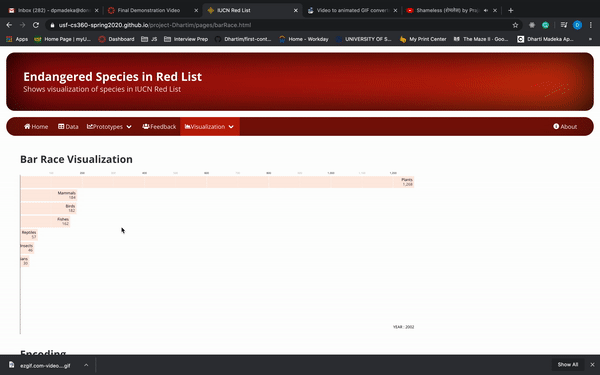

Bar Race Visualization
Encoding
In this visualization, bars are encoded over count of endangered species in each Taxonomy increased / decreased from 1998 till 2020.
Interactivity
In this visualization, there is just bar race animation. Each Bar is shows different Taxonomy in IUCN Red List, height of bar shows increase and decrease in the count of number of Endangered species from 1998 till 2020. Here is the gif of it
Finding
This bar chart gives answer to the question: If there is increase or decrease in the number of Endangered Species and which family from 1998 - 2020 ? It shows if there is that there is increase in Plant family followed by Fish Taxonomy over a period of time, i.e. from 1998 till 2020. It also shows that plant species are Endangered due to deforestation and fishes due to poaching and sea pollution.